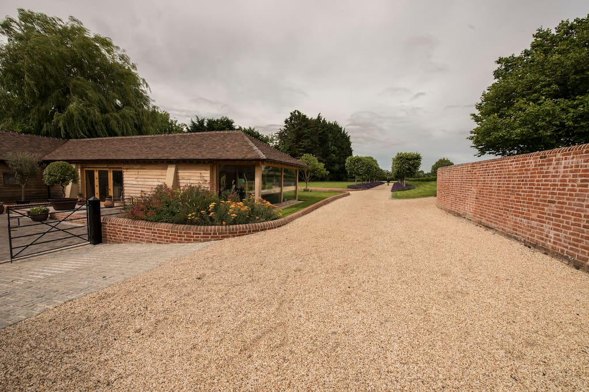

Drones!

Dissapointed, that I had not finished the drone and was not ready to fly the next day, I went at it again researching and developing my understanding of what needed to be done to get this machine up in the air. I spent the next couple weeks researching, testing, breaking and developing the drone to the point where all the pieces fitted together well and I could get the drone off the ground. Well, partly anyway. Two of the motors would power up, whilst the other two would continue to stay stationary, every time I turned the drone on, it would power up and then flip over. After many weeks of fustration and dissapointment, I packed all the drone parts away, underneath my bed and left it to die, well, that's what I thought at the time. I had to focus on school exams.
After about eight months, I realised that I had forgotten about the drone and it was slowly collecting dust whilst cleaning my room. I took it out from underneath my bed and layed it on my bed, still annoyed at how it was a fail. I unpacked it all and began connecting components black together, turned it on and found an update to the software of a CC3D flight controller. I found out that the software, at the time of my building, was corrupt and I needed an update to fix the flip problem. So, I came back after updating the flight controller, connected it all and took it out the garden, chose a different spot to the space it kept flipping, and powered up the throttle. I couldn't believe it, it worked!
 I had it flying, but then we went to a wedding in Southampton, I was too excited to leave it at home so I took it with me, we rented an Airbnb and I continued to work on the drone whenever I had the chance. Taking advantage of the huge garden that we had at our barn-like Airbnb. I continued to work on the drone and learnt how to fly it properly in the large garden area. I was able to fly the drone correctly and had quite a few hours of flight time, until my Dad wanted to try and crashed it quite far away from me. Another £20 for the frame gone in seconds.
Since then, I have had many successful flights totalling about 200 hours whilst also learning about new technology being used in the drone industry. One of the main new technolgies is autonomous drone flying, something that I have been interested in for many years, I have recently begun to implement simple autonomy in the drones I build, as well as the DJI Mavic Air which I was lucky enough to get after my GCSE's. As of September 2018, I have been working on an EPQ (Extended-Project-Qualification), to obtain half an A-level, where I have focused my research and development around 'Designing and manufacturing a drone from LEGO, using low-cost, easy-to-repair materials that will improve crop yield with drip irrigation, detection and fertilisation spot spraying'